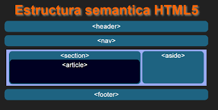

Etiquetas semánticas
 Qué son etiquetas semánticas
El HTML semántico se refiere realizar la correcta maquetación a través de la marca de cada elemento según su función dentro del documento, independientemente de la apariencia que se desee, sin pretender dar estilos con las mismas etiquetas y dejando que sean configurados por CSS, por ejemplo, usar etiquetas h1 para el título, etc.
Entre las principales etiquetas semánticas tenemos
<header>
La etiqueta <header> se usa para marcar un grupo de elementos de introducción o de navegación dentro de una sección o documento. Normalmente se usa para incluir los encabezados (<h1>–<h6> o <hgroup>)<hgroup>
La etiqueta <hgroup> se usa para agrupar un conjunto de uno o más elementos de encabezado (<h1>–<h6>).<nav>
La etiqueta <nav> se usa para marcar una sección del documento cuya función es la navegación por la página web.<article>
La etiqueta <article> se usa para marcar contenido independiente que tendría sentido fuera del contexto de la página actual y que podría sindicarse<section>
La etiqueta <section> se usa para marcar una sección genérica de un documento o aplicación. Una sección, en este contexto, es una agrupación temática del contenido, típicamente con un encabezado.<aside>
La etiqueta <aside> se usa para marcar un trozo de contenido que está relacionado con el contenido de la página web, pero que no es parte del mismo.<footer>
La etiqueta <footer> se usa para marcar el pie de una sección o documento y que contiene información sobre el mismo como el autor, licencia, términos de uso.HTML5: Nuevas etiquetas semánticas y estructurales. (2021). Recuperado 5 de octubre de 2021, de Arume website: https://www.arumeinformatica.es/blog/html5-nuevas-etiquetas-semanticas-y-estructurales/2
Estándares HTML, ¿qué son y por qué usarlos?. (2021). Recuperado 5 de octubre de 2021, de Arume website: https://www.arumeinformatica.es/blog/html/#html-semantico